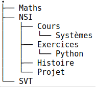

C8 Arbres
Activités
 Activité 1 : Vocabulaire
Activité 1 : Vocabulaire
-
Après execution d'une commande dans un terminal Linux on a obtenu l'affichage ci-dessous : 
- De quelle commande s'agissait-il ? Quelle est sa traduction en français ?
- Que sont
MathsetNSIpour le système d'exploitation ? - Un point (.) figure en haut du schéma, quelle en est la signification ?
- Que signifie le lien entre
NSIetProjet?
-
Le schéma ci-dessus est un exemple d'arbre (on parle d'ailleurs de l'arborescence des dossiers dans un système d'exploitation). Un arbre est constitué de noeuds et un lien entre deux noeuds s'appelle une arête.
- Citer trois noeuds de l'arbre ci-dessus et donner un exemple d'arête.
- Quel noeud est le répertoire parent de
Systèmes? On dira dans le vocabulaire des arbres que le noeudSystèmesest un fils de ce noeud. - Citer tous les fils du noeud
NSI. - Dans un arbre, un seul et unique noeud n'est le fils de personne, on l'appelle la racine de l'arbre. De qui s'agit-il ici ?
- Nommer les noeuds n'ayant aucun fils (on les appelle feuilles de l'arbre).
- Une branche est une suite (finie) de noeuds depuis la racine vers une feuille. Donner une branche de cette arbre constituée de trois noeuds.
- Donner la taille de cet arbre (c'est à dire son nombre de noeuds).
- Donner l'arité de cet arbre, c'est à dire le nombre maximal de fils qu'un noeud peut avoir.
-
Donner la hauteur de cet arbre c'est à dire le nombre maximal de noeuds dans une branche.
Attention
La hauteur d'un arbre est parfois définie comme le plus grand nombre d'arêtes dans une branche. Dans les sujets de bac faire attention à la définition utilisée qui est normalement donnée dans l'énoncé.
Activité 2 : Arbre binaire
Chez les abeilles, le système de reproduction fait que :
- une abeille femelle est issue de deux abeilles, un mâle et une femelle,
- une abeille mâle est issue d'une seule abeille femelle.
Cela s'explique par le fait qu'un oeuf non fécondé (donc issu uniquement d'une femelle) donne toujours naissance à une abeille mâle, alors qu'une oeuf fécondé (donc issu d'un mâle et d'une femelle) donne toujours naissance à une abeille femelle. On a représenté ci-contre les quatre premiers niveaux de l'arbre généalogique d'une abeille mâle en notant avec la lettre M les mâles et la lettre F les femelles.
graph TD
F0["F"] --> F1["F"]
F0["F"] --> M1["M"]
M1 --> F2["F"]
F1 --> M2["M"]
F1 --> F3["F"]
F2 --> F4["F"]
F2 --> M3["M"]
M2 --> F5["F"]
F3 --> F6["F"]
F3 --> M4["M"]-
Définition des arbres binaires
- Recopier et compléter cet arbre en ajoutant le 5e niveau.
- Rappeler la définition de l'arité d'un arbre et d'un noeud. Quelle est l'arité des feuilles d'un arbre ?
- Déterminer le degré (arité) des noeuds qui ne sont pas des feuilles selon que le noeud représente une abeille male ou une abeille femelle.
- On appelle arbre binaire, un arbre dans lequel les noeuds ont au maximum deux fils. Donner une définition équivalente utilisant le mot arité et justifier rapidement que l'arbre généalogique d'une abeille est binaire.
-
Une définition récursive
On reprend l'exemple de l'abre généalogique d'une abeille femelle jusqu'au cinquième niveau dessinée ci-dessus. On appelle sous arbre gauche et sous arbre droit l'arbre généalogique de chacune des deux parents de la racine. L'arbre est alors noté sous la forme d'un triplet constitué de la racine et des deux sous arbres :
(racine, sous arbre gauche, sous arbre droit).- Justifier rapidement que les deux sous arbres sont des arbres binaires.
- Que dire du sous arbre droit lorsque l'abeille est un mâle ?
- Pour une feuille, que dire du sous arbre droit et du sous arbre gauche ?
- En déduire une version récursive de la définition d'un arbre binaire.
- Donner une définition récursive de la taille d'un arbre binaire.
- Donner une définition récursive de la hauteur d'un arbre binaire.
Activité 3 : Relation entre la hauteur et la taille d'un arbre binaire
- On note \(h\) la hauteur d'un arbre binaire et \(n\) sa taille, on suppose dans la suite que \(n \geq 2\). En rappelant les définitions de la hauteur et de la taille d'un arbre, justifier que \(n \geq h\).
-
On numérote les noeuds d'un arbre binaire de la suivante :
- la racine porte le numéro 1,
- le fils gauche d'un noeud porte le numéro de son père suivi d'un 0,
- le fils droit d'un noeud porte le numéro de son père suivi d'un 1.
On a entamé la numérotation de l'arbre binaire ci-dessous, recopier cet arbre et compléter cette numérotation.
graph TD
A["A : 1"] --> B["B : 10"]
A --> C["C : 11"]
B --> D["D : ..."]
B --> E["E : 101"]
C --- V1[" "]
C --> F["F: ..."]
D --> G["G: ..."]
D --> H["H: ..."]
F --> I["I: ..."]
F --- V2[" "]
style V1 fill:#FFFFFF, stroke:#FFFFFF
linkStyle 4 stroke:#FFFFFF,stroke-width:0px
style V2 fill:#FFFFFF, stroke:#FFFFFF
linkStyle 9 stroke:#FFFFFF,stroke-width:0px- Justifier que sur un niveau donné de l'arbre tous les numéros de noeud ont le même nombre de caractères.
- En déduire en fonction de \(h\), le nombre de caractères formant le numéro des feuilles
- En utilisant vos connaissances sur la numérotation binaire d'un entier positif, prouver que \(n \leq 2^h - 1\).
Activité 4 : Implémentation des arbres binaires en Python
Le notebook suivant présente une implémentation possible des arbres binaires en Python. Cette implémentation pourra être sauvegardée et utilisée en exercice.
Cours
Vous pouvez télécharger une copie au format pdf du diaporama de synthèse de cours présenté en classe :
Attention
Ce diaporama ne vous donne que quelques points de repères lors de vos révisions. Il devrait être complété par la relecture attentive de vos propres notes de cours et par une révision approfondie des exercices.
Exercices
Exercice 1 : DOM
On considère le code html suivant :
<html lang="fr">
<head>
<meta charset="UTF-8">
<title>Exemple</title>
</head>
<body>
<h1> Un titre </h1>
<p> Bonjour ! </p>
<table>
<tr>
<td> Case 1</td>
<td> Case 2</td>
</tr>
</table>
</body>
</html>
graph TD
HTML["html"] --> HEAD["head"]
HTML["html"] --> BODY["body"]
HEAD --> META["meta"]
HEAD --> TITLE["title"]
BODY --> H1["h1"]
BODY --> P["p"]
BODY --> TABLE["table"]
TABLE --> TR["tr"]
TR --> TD1["td"]
TR --> TD2["td"]- Que représentent les noeuds de cet arbre ?
- Que signifie du point de vue du html une arête de cet arbre ?
- Quelle est la racine de cet arbre ?
- Donner les feuilles de cet arbre.
- Donner une branche de cet arbre.
- Donner l'arité de cet arbre.
- Donner la hauteur de cet arbre.
Exercice 2 : Vocabulaire sur les arbres
On considère l'arbre ci-dessous :
graph TD
A["A"] --> L["L"]
A --> G["G"]
L --> O["O"]
L --> R["R"]
G --- V1[" "]
G --> I["I"]
O --> T["T"]
O --> H["H"]
R --> M["M"]
R --> E["E"]
I --> S["S"]
I --- V2[" "]
style V1 fill:#FFFFFF, stroke:#FFFFFF
linkStyle 4 stroke:#FFFFFF,stroke-width:0px
style V2 fill:#FFFFFF, stroke:#FFFFFF
linkStyle 11 stroke:#FFFFFF,stroke-width:0px- Justifier qu'il s'agit d'un arbre binaire. Quelle est sa taille ?
- Quelle est sa racine ? Nommer les feuilles.
- Donner une branche de cet arbre.
- Donner la hauteur de cet arbre.
- Donner une branche de longueur 3 dans cet arbre.
- On considère le sous arbre gauche de la racine, quel est l'arité de chaque noeud ? Que peut-on dire du sous arbre gauche ?
- Même question pour le sous arbre droit de la racine.
Exercice 3 : Représenter un arbre binaire
- Dessiner tous les arbres binaires à 3 noeuds. Attention à bien distinguer le fils droit du fils gauche.
- Dessiner un arbre binaire de taille 4 et de profondeur 4.
- Dessiner un arbre binaire de taille 4 et de profondeur 3.
-
Quelle est la taille maximale d'un arbre binaire de hauteur 10 ? Justifier
Aide
On pourra utiliser sans justification, la formule vue en cours qui permet d'encadrer la taille d'un arbre en fonction de sa hauteur.
Exercice 4 : Représenter un arbre binaire par un triplet
On rappelle qu'on peut définir un arbre binaire de façon récursive, en effet, un arbre binaire est soit vide (noté \(\Delta\)), soit un triplet \((etiquette,sag,sad)\) où \(sag\) (pour sous arbre gauche) et \(sad\) (pour sous arbre droit) sont eux-mêmes des arbres binaires.
On considère les arbres suivants :
- \(A = (7,\Delta,\Delta)\)
- \(B = (2,(3,\Delta,(9,\Delta,\Delta)),(10,\Delta,\Delta))\)
- \(C = (4,(1,(8,\Delta,\Delta),(7,\Delta,\Delta)),(3,(6,\Delta,\Delta),(5,\Delta,\Delta)))\)
Pour chacun de ces arbres :
- Faire un schéma pour le représenter.
- Donner sa taille, sa hauteur, son nombre de feuilles.
Exercice 5 : Retour sur l'implémentation
On reprend ici l'implémentation des arbres binaires vu en cours que vous pouvez télécharger ci-dessous : Implémentation arbres binaires
- Compléter cette implémentation en écrivant une fonction
degenere(n)qui prend en argument un entier positifnet qui renvoie l'arbre binaire dégénéré de taillen. On utilisera comme étiquette des noeudsD0, D1, D2 .... - Compléter cette implémentation en écrivant une fonction
complet(h)qui prend en argument en entier positifhet qui renvoie l'arbre binaire complet de hauteurh. On utilisera comme étiquette des noeudsC0, C1, C2, .... - Reprendre ces deux fonctions et en écrire une version prenant aussi en paramètre une liste de chaines de caractères qui sera utilisée comme étiquette des noeuds. Par exemple
complet(2,["T","O","P"])renvoie l'arbre binaire complet de hauteur 2 dont la racine porte l'étiquetteTet a pour fils gaucheOet fils droitP. - Utiliser ces deux fonctions de façons à créer rapidement l'arbre de l'exercice 2.
Humour d'informaticien
Finally after years of search I found a real tree ...